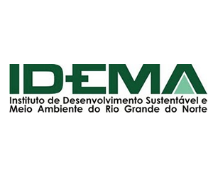
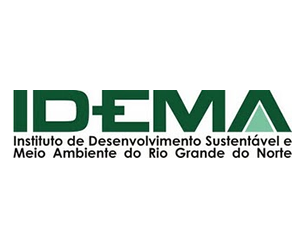

Palestras
- Amphibian Decline Population (12/11/17) - Profº Dr. James Ask - Anfiteatro das Aves - CB - UFRN
- Anfíbios da Mata Atlântica e sua importância (25/10/17) - Profº Ms. John Goldeneye - Zona de Proteção Ambiental V - Espaço teatral
- Anfibologia popular (23/10/17) - Profº Arnaldo Ente - Zona de Proteção Ambiental III - Praça Central
- Sapos e papos (20/10/17) - Profª Dra. Maria Consuela - Parque das Dunas - Coreto
- Sapos, rãs, gias e pererecas (15/10/17) - Profª Dra. Joana Vil - Anfiteatro dos Anfíbios - CB - UFRN


 
